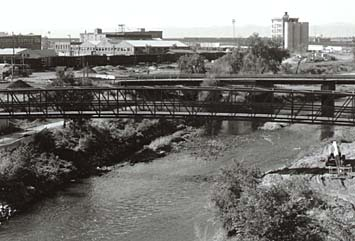

Platte River at 38th Viaduct

Cassady first ran away from home to this spot.
``Mainly it was the banks of the Platte that provided the flexuous corridor
for my travels...Near the 38th Avenue U.P. yardoffice, this stack, tempting
for the splendid bicycle hills alongside, was also my destination on my
first run-away-from-home at eight [1934].'' [First Third, 83]
Literary Kicks
Neal's Denver
Contributed by
Andrew Burnett